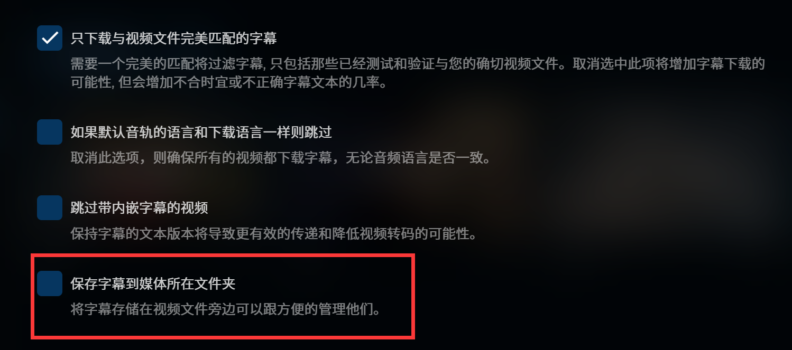

NAS（11）—— HTPC
概述
HTPC（Home Theater Personal Computer，家庭影院电脑），简单地说就是可以组建家庭影院的电脑，与功放、大屏幕电视或投影仪连接，以欣赏高清视频和音乐。
在这个部分，我们配置的机器并不能严格地称为一台 HTPC，但已经能完成媒体库的建立、管理，服务器端硬解播放，刮削等功能了，和 PT 下载配合起来，足够满足日常的影音需求。
Jellyfin
Jellyfin 是一个自由软件媒体系统，可让您控制管理和流式传输媒体。它是专有的 Emby 和 Plex 的替代方案（如：这二者的硬解功能都需付费，而 Jellyfin 是免费的），通过多个应用程序将媒体从专用服务器提供给终端用户设备。Jellyfin 衍生于 Emby 的 3.5.2 版本，并移植到 .NET Core 框架以实现完整的跨平台支持。没有附加条件，没有高级许可证或功能。
通过 Docker 部署
使用 Docker Compose：
1 | version: '3.5' |
配置
美化
我们可以通过自定义 CSS 代码的方式来为 Jellyfin 设置主题。
在控制台 - 常规 - 品牌 - 自定义 CSS 代码处放入自己喜欢的主题。
媒体库
如果想要让 Jellyfin 与 qBittorrent 等联动，需要注意：不能更改文件夹名、文件名等，否则将无法做种。
可以在控制台 - 媒体库 - 创建媒体库处创建新媒体库。内容类型请勿选择“混合电影与电视剧”，会导致刮削问题。“节目”类型包括电视剧、番剧等包含多集、多季的媒体源。
在不更改 PT 下载文件的文件夹名及文件名的前提下，我们可以这样安排媒体源的存放位置：
1 | media |
PT 下载时，将文件分别设置在对应目录下：
- /media/Anime
- /media/Movie
- /media/TV Play/TV Play 1
- …
只需在compose.yaml中将 media 文件夹挂载到容器相应目录即可。
软解与硬解
我们先来看看视频播放的基本流程：
- 解封装：将输入的封装格式的数据，分离成为音频流压缩编码数据和视频流压缩编码数据。如上图，将 MP4 和 FLV 格式解封装成视频数据 H264、MPEG2 和音频数据 AAC、MP3 格式。
- 解码：将视频 / 音频压缩编码数据，解码为非压缩的视频 / 音频原始数据。如上图，将视频数据解码成 YUV 格式和音频数据解码成 PCM 格式。
- 视音频同步：就是根据解封装模块处理过程中获取到的参数信息，同步解码出来的视频和音频数据，并将视频音频数据送至系统的显卡和声卡播放出来。
解码的方式主要分为两种：
- 软件解码：即通过软件让 CPU 来对视频进行解码处理。
- 硬件解码：是将原来全部交由 CPU 来处理的视频数据的部分交由 GPU 来做。
硬解码效率非常高，不但能够减轻 CPU 的负担，还有着低功耗，发热少等特点。但是，由于硬解码起步比较晚，软件和驱动对它的支持度很低，往往会出现兼容性不好的问题。此外，硬解码的滤镜、字幕、画质方面都做的不够理想。
软解码需要对大量的视频信息进行运算，所以对 CPU 处理性能的要求非常高。巨大的运算量就会造成转换效率低，发热量高等问题。不过，软解码不需要过多的硬件支持，兼容性非常高。而且软解码拥有丰富的滤镜，字幕，画面处理优化等效果。最常见的视频软解码开源库就是 FFmpeg。
由于 Jellyfin 的 GPL 协议和 Intel 的 media-driver (iHD) Linux 驱动（部分开源）在协议上不兼容的缘故，Jellyfin 官方的 Docker 镜像：jellyfin/jellyfin 并不包含 Intel Linux 核显驱动。但是 Intel 的 QuickSync QSV 硬件加速依赖于该驱动，并且 Intel 10 代酷睿（Comet Lake）以及更新的处理器需要该驱动才能正常使用硬件加速。另外 VPP / OpenCL 色调映射也需要该驱动才能正常运作。
为了解决这个问题，nyanmisaka 提供了一个开箱即用的 Docker 镜像，包含最新的驱动、jellyfin-ffmpeg、补丁、CJK 系统字体等。非常感谢！
在控制台 - 播放 - 转码处配置硬件解码：
笔者使用的 CPU 为 G4600，可以在这个网站查看 CPU 编解码支持情况。以笔者的 CPU 为例：
这说明 G4600 的核显 HD 630 不支持 AV1 的编解码与 VC-1 的编码。
以下提示引自 nyanmisaka 的文章：
对于硬件转码设置的一些提示
- Intel、AMD、NVIDIA 三家的显卡/核显均不支持对 H.264 10bit 硬件加速，请使用 HEVC 10bit 替代。
- 开启 Low-Power 低电压模式可以提升 Intel 的转码和色调映射性能，此功能在 Windows 下可以直接开启，但在 Linux 下需要手动添加内核参数 i915.enable_guc=2 才能使用。11 代之前的处理器仅支持开启 Low-Power H.264。
- Linux 下，如果 Intel 核显的 VPP 和 OpenCL 色调映射同时开启，则会优先使用 VPP。VPP 色调映射只支持部分 Intel 核显，目前支持的代号如下：DG1 / SG1（独显）、TigerLakeX（1135G7, 1165G7…）、IceLake（1065G7…）、GeminiLake / KabyLakeX（J4005，J5005，i3-7100 | 8100 | 9100 | 10100…）类比到对应处理器代号的赛扬 / 奔腾 / 酷睿 i3 / i5 / i7 / i9 版本。诸如 J3455 的 ApolloLake 处理器不支持 VPP 色调映射。
- Linux 下，对于 Intel 核显，建议优先使用 QSV 而非 VAAPI，QSV 通常能提供更高的吞吐量。
对于 Intel 转码核显的选择
- 用于转码 4K HDR HEVC、VP9 10bit 视频的最低配置为 J4005 类似的代号为 GeminiLake 的处理器，即 UHD 600/605。更低或更旧的核显加速效果非常受限，或者只能加速H.264 8bit。
- 最近新出的 N5105/N6005 系列 Jasper Lake 处理器，产品定位于取代 J4005 同代的处理器，在转码性能上远超后者 Gemini Lake。N5105 具有 24EU 而 N6005 具有 32EU，更多的 EU（Intel 核显运算单元）有助于加快色调映射。所以 N5095 的 16EU 要比前两者慢一些。实测 N6005 双通道内存转码性能接近 HD630 核显。
- 用于转码 4K HDR HEVC、VP9 10bit 视频的主流配置为 i3-7100/8100/9100/10100 和同代 i5/i7 中的 HD/UHD630 核显，此类核显可以胜任绝大部分 4K HDR HEVC VP9 10bit 转码，包括 Linux 和 Windows 下的色调映射。
手动添加内核参数的方法：
创建/etc/modprobe.d/i915.conf文件：
1 | sudo vim /etc/modprobe.d/i915.conf |
写入以下内容：
1 | options i915 enable_guc=2 |
保存退出后，重启系统即可生效。
建议启用 OpenCL 色调映射，而非 VPP 色调映射。后者会使转换后的色彩偏暗。可以使用 BT.2390 算法。
最后在配置页面勾选处理器支持的功能即可。
实际观看体验，HEVC 10 bit 4K 硬解帧率也能达到 50 fps，非常满意。
中文字幕
当媒体源外挂 ASS 格式的字幕时，可能会出现汉字无法正常显示，而是变成一个个方框的问题。如果你使用的是 nyanmisaka 提供的镜像，这个问题很容易解决，因为该镜像已经包含了 CJK 系统字体。否则，还需要将 CJK 字体导入容器。
点击右上角 - 字幕，将字幕语言偏好修改为 Chinese，烧录字幕选择所有复杂格式字幕，保存即可。
如果媒体源没有附带的中文字幕，我们可以使用 Open Subtitles 插件获取。
在控制台 - 插件 - 目录处找到 Open Subtitles 插件，点击 Install。安装完成后重启 Jellyfin。
此时 Open Subtitles 插件应出现在控制台 - 插件 - 我的插件处，进入插件设置页面：
这里需要先在 opensubtitles.org 上注册一个账号，在这个页面填写用户名与密码，点击保存即可。免费用户每天可以下载 20 个字幕。
为了不影响 PT 下载，我们需要打开控制台 - 媒体库 - 管理媒体库，将“保存字幕到媒体所在文件夹”选项取消勾选。这样就不会在媒体源文件夹中产生新的文件。

打开要安装字幕的媒体源的菜单，点击“修改字幕”：
语言选择 Chinese，点击搜索：
下载自己需要的字幕即可。在播放时点击“CC”字样的图标即可更换字幕。
IPTV
IPTV（Internet Protocol Television）是基于互联网协议传输的电视服务，通过 IP 网络将电视节目、视频内容和其他多媒体服务传输到用户的电视设备上。并使用通过互联网提供直播电视节目的技术，而不是天线，卫星天线或光纤电缆。换句话说，IPTV 通过互联网实时流式传输视频内容。用户需要在其设备上安装相应的应用程序或使用特定的设备才能访问和观看节目。
简单来说，就是可以用 IPTV 来观看电视节目，如中央一台、中央六台等。
如果没有开通 IPTV 业务，我们可以使用网络上的直播源。注意：仅供学习与交流使用，请勿用作任何商业用途或非法目的！
进入 Jellyfin 控制台，选择电视直播栏，点击新建调谐器设备：
调谐器类型我们选择 M3U Tuner，再在文件或网址处填写 m3u 源的地址。请自行寻找可用的地址。
接下来我们需要配置电子节目单 EPG。新建电视指南数据提供方，选择 XMLTV，填写地址（如：epg.51zmt.top:8000/e.xml），点击保存，等待节目单更新完成即可。
更新完成后我们回到主页，已经出现了电视直播。我们点击指南一栏，可以看到节目单。
点击某个节目，能够正常播放。
通过 Jellyfin，我们还可以录制电视节目。我们在指南中点击一个节目，就会跳出来节目录制，录制电视剧则是根据名称进行一系列录制，录制则是单独录制某一集。
回到控制面板，选择数字录像机，设置录制节目的保存路径（可以在compose.yaml当中挂载出来），录制前后时差选择 20 分钟可以确保录制成功。
刮削
刮削是视频播放软件以及视频管理软件的一个功能，可以自动识别影视文件并在线获取相应的海报、标题、导演、演员和编剧等信息，让你在管理以及播放本地影视文件的时候更加方便。
刮削器，Scraper 的直译，是多媒体播放设备上的一种软件，如 TMDb（The MovieDb），用于采集电影信息，并呈现给观众。刮削器，就是根据一定规则命名的视频（音乐）文件名或者文件夹名，自动下载相关的简介、海报、缩略图等资料，帮你建立一个漂亮而实用的资料库的一种软件程序。
为什么不使用 tMM
tinyMediaManager是使用 Java / Swing 编写的媒体管理工具，能够为 Kodi、Jellyfin、Emby、Plex 媒体服务器提供元数据。tinyMediaManager 的原理是根据文件的标题到电影资料网站上匹配电影信息，下载电影的资料及图片到本地上，供 Kodi、Jellyfin、Emby、Plex 等多媒体软件使用。
原因如下：
-
界面较为古早，Web 端分辨率很低（下图未经过压缩）。
-
由于 PT 下载的限制，不能对文件夹名以及文件名进行修改，因此 tMM 非常重要的功能——重命名、归档媒体无法使用。
-
如果能够访问 TMDb，tMM 能刮削到的信息，通过 Jellyfin 也能够直接刮削到。
Jellyfin 刮削
Jellyfin 在创建媒体库时即可进行刮削：
这里建议取消勾选 TOMD，因为它和 TMDb 之间会出现不兼容的问题。如果网络产生波动，可能会优先使用 TOMD 刮削到的内容，从而产生错误。
媒体库添加完成后，等待媒体库扫描完成，回到主页即可看到新添加的媒体库。由于下载器的原因，Jellyfin 对电影的刮削效果较好，而对于电视剧、番剧等内容可能会出错。此时我们可以打开需要修改刮削内容的媒体源的菜单，点击识别。
在此处输入名字、TMDb ID 等，再点击搜索，从结果当中选择相符的内容，耐心等待刮削完成即可。
国内访问 TMDb 可能会出现问题，建议修改 Host 或者使用代理，这里就不详述了。
Bangumi 插件
以下部分主要来自于这篇文章。
前面我们提到过，Jellyfin 对于番剧的刮削效果不是很理想，于是我们可以使用 Bangumi 插件。
Bangumi 番组计划是一个中文 ACG 互联网分享与交流网站，功能与豆瓣类似。因为专精 ACG，所以 Bangumi 上的元数据信息要比豆瓣详细。更关键的是，Bangumi 在国内是可以直接访问的。
如果网络顺畅，可以直接在线安装。在控制台 - 插件 - 存储库处点击加号，添加如下网址：
1 | https://jellyfin-plugin-bangumi.pages.dev/repository.json |
保存后，就可以在控制台 - 插件 - 目录处的元数据分类中找到 Bangumi 插件，点击 Install。安装完成后重启 Jellyfin。
插件安装后，在创建番剧媒体库时，就可以将 Bangumi 下载器排在最前面，优先级最高。
手动进行识别时，我们可以先在 Bangumi 网站上找到番剧 ID，直接输入即可刮削到对应番剧信息。

我们还可以通过 AutoBangumi 这样的工具来通过 RSS 订阅实时追番。具体步骤在此就不详述了，可以参考这篇文章。
下一章节：Immich 照片管理